[SH4] Things Henry Doesn't Have in His Room
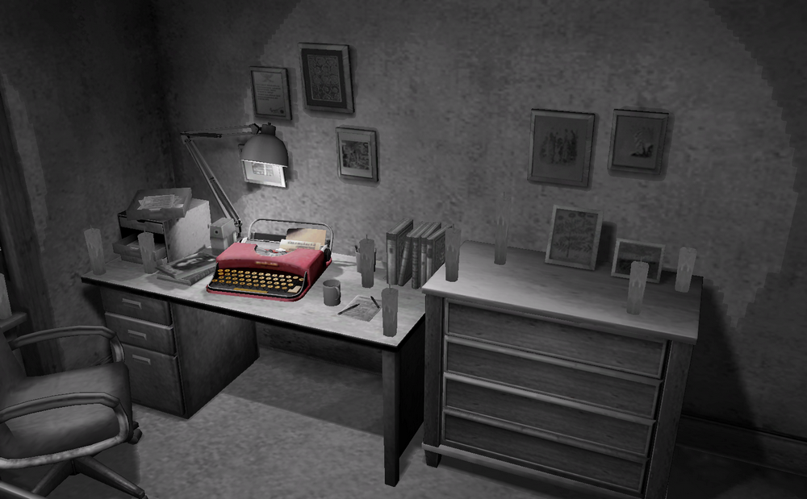
And His Job, Including "Official" Info (?)
![[SH4] Things Henry Doesn't Have in His Room](img/da29.png)
This is a mirror of the DeviantArt version linked above, provided as a backup and for easier access.

A while back, when I was talking about what's in the kitchen, I mentioned that there's no microwave in Henry's room, even though there's one in Eileen's room and in the other room. And the same goes for a computer.
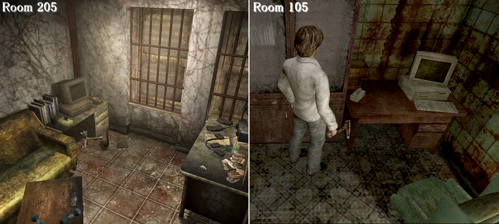
Even the superintendent Frank can use one, and other gamers have them too, but not him. Henry has a VCR, but no games either!
And the clocks—Joseph's bedroom had both an alarm and a wall clock, but there's none in current Room 302, the bedroom.
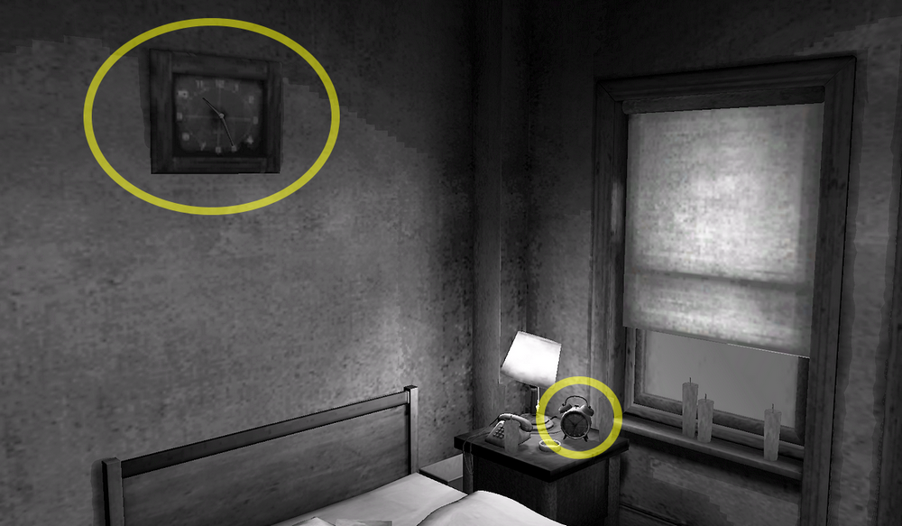
Henry's room only has the wall clock from the living room.
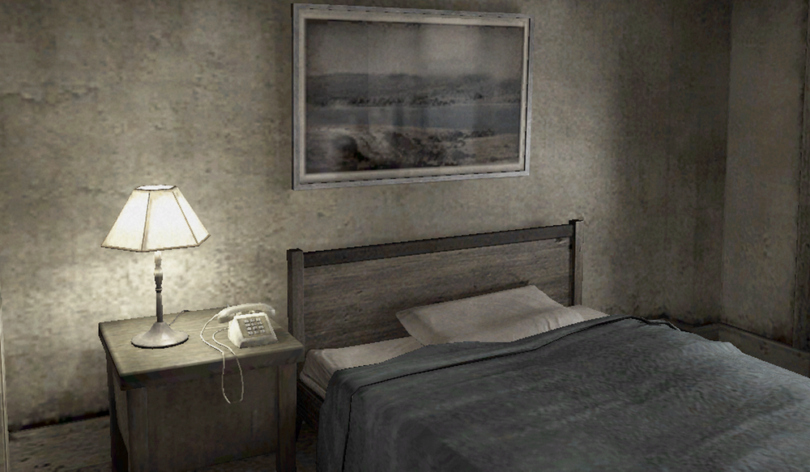
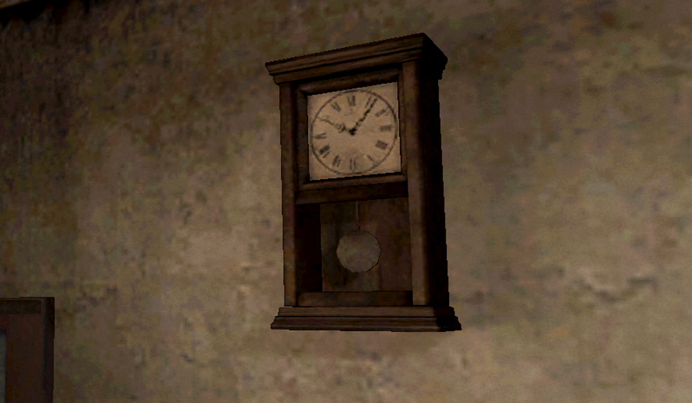
If he really lives without needing an alarm, I have to say, I am a little jealous. Well, all sorts of things are simply not present in his room to begin with, and this keeps his job and other details a bit of a mystery.
By comparing Henry's room with Joseph's room, you can get a sense of his personal belongings.
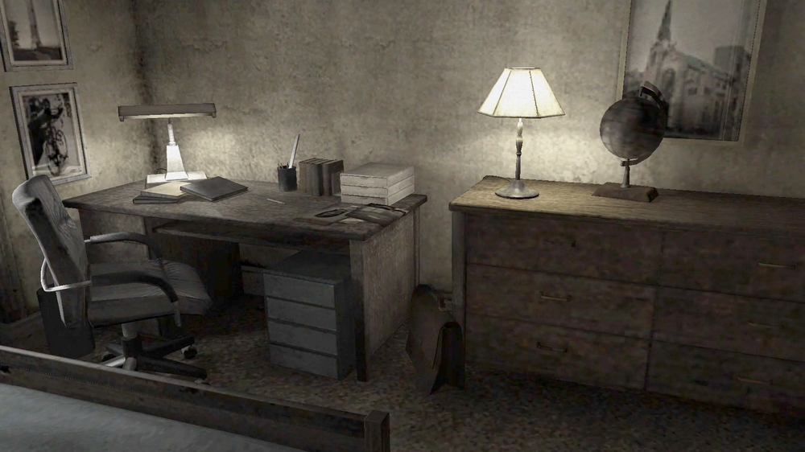
The cabinet in the bedroom, with the globe placed on top of it, and the shoe boxes in the closet.
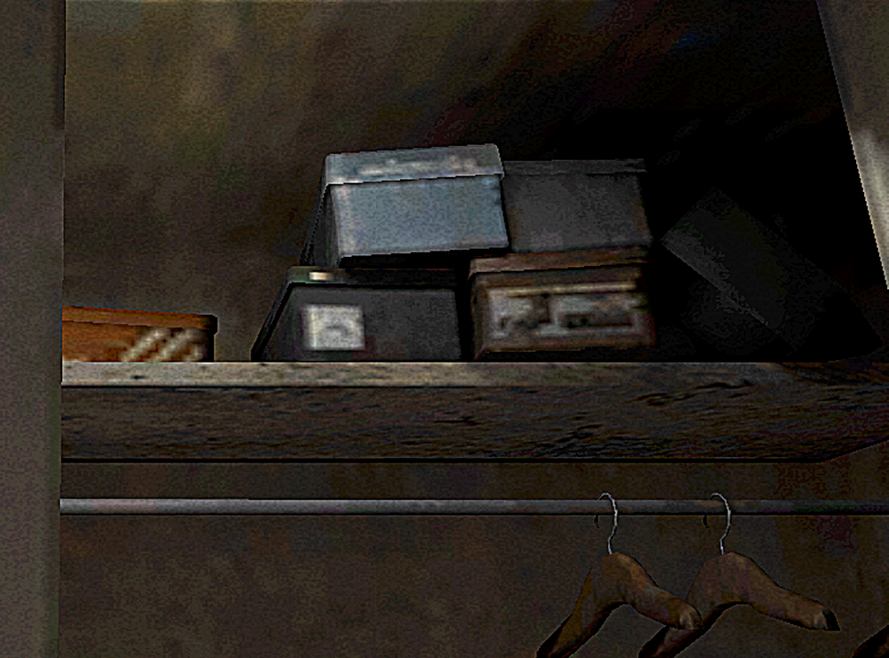
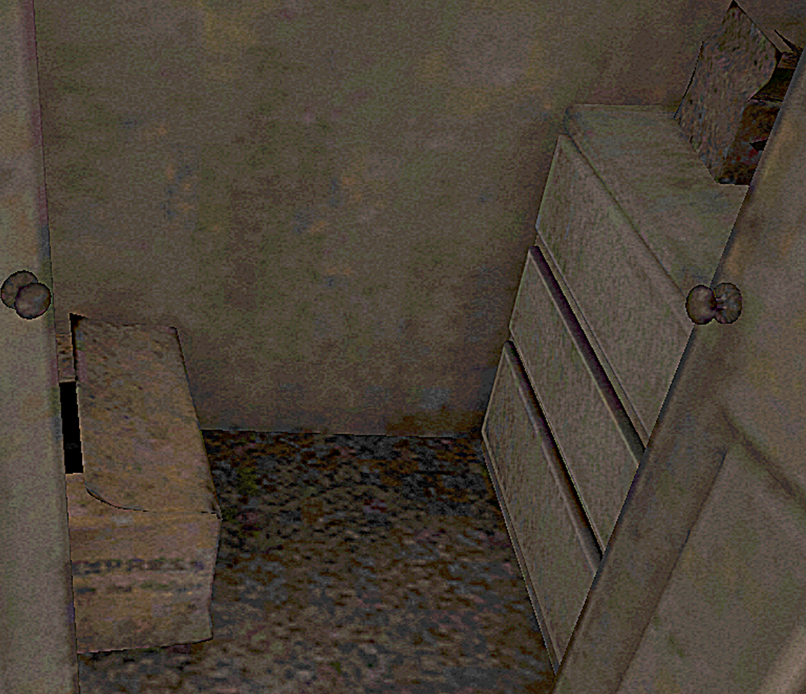
An Express cardboard box. These might be clues that give us a glimpse into Henry's hobbies and everyday life.
For example, most of the items in the kitchen. It might seem more lived-in than Joseph's.
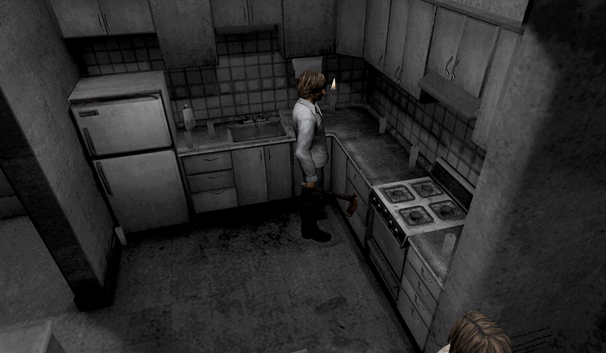

Not to mention the TV and VCRs, the kitchen stools, and it also has a storage chest and a wall clock—none of which are in Joseph's room.

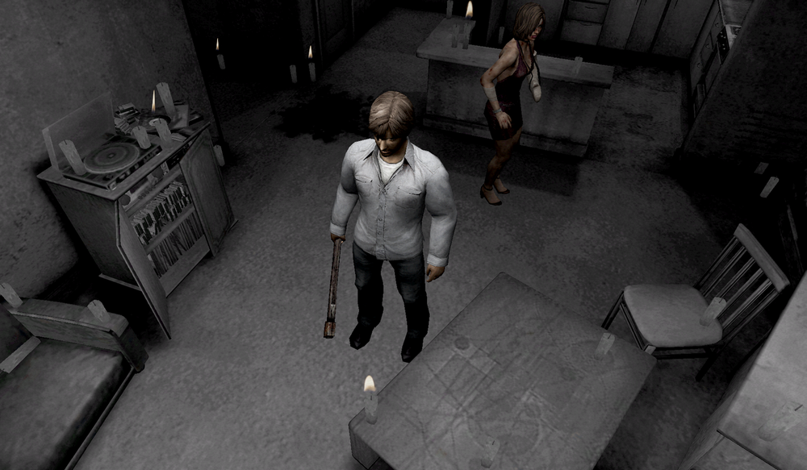
As for the wall clock, for example, you can have fun thinking about why he brought that clock and how he values it. No answer comes out, though!
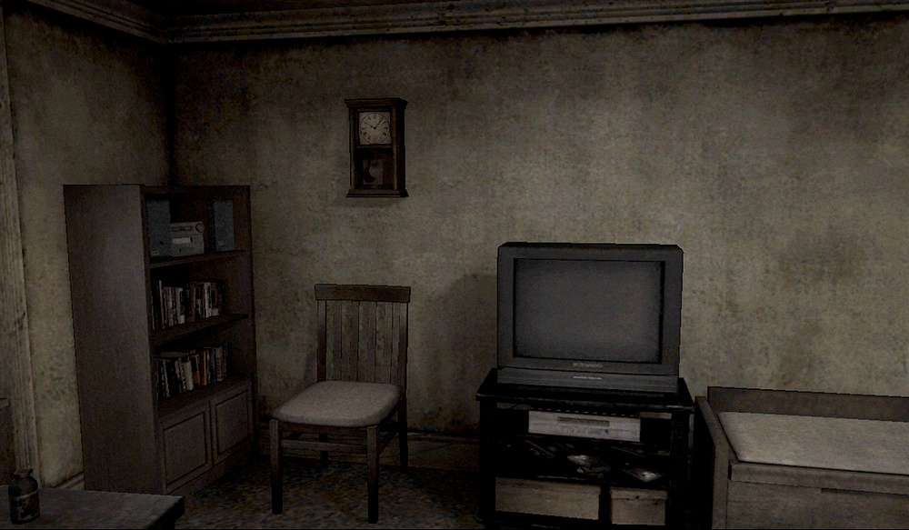
✅ Henry's Job (official setting lol)
By the way, I do remember that around the time of the release, Yamaoka-san, who was also a producer on SH4, being asked about Henry's job and casually saying something like, "Ummm…, maybe he's a newspaper delivery guy?" and that part was official info, at least in Japan! Even though Henry doesn't have an alarm clock in his room...
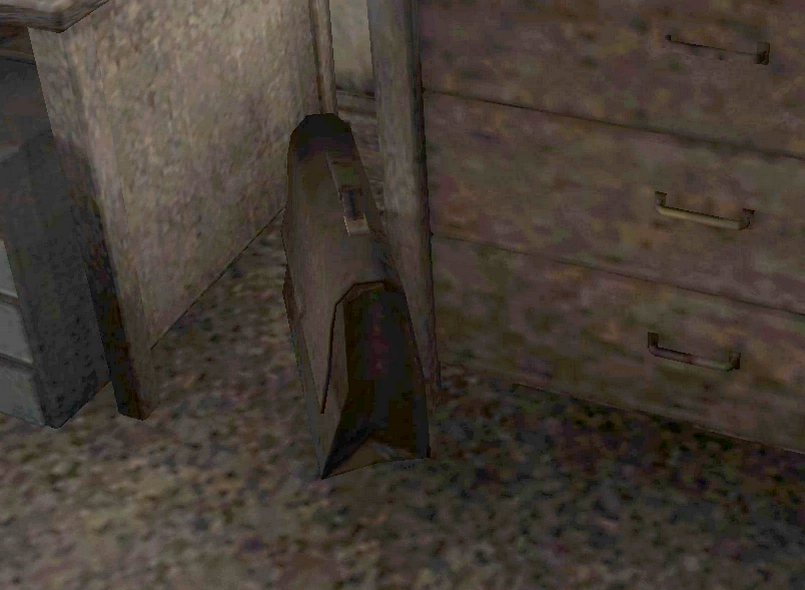
But I guess Yamaoka-san has probably forgotten he even said that. Haha.